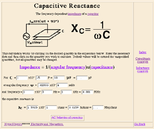
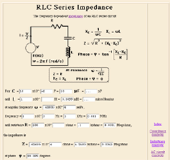
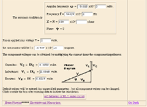

Doing It by the Numbers: Javascript Calculations in Web-Based Instructional Material, Carl Rod Nave
Page 4
|

|
Another way to use the Javascript in web documents parallels the way I use a spreadsheet in instruction; to do tedious repetitive calculations needed for a design problem. Even the calculation of capacitive reactance is a bit tedious if you do it repetitively, so this calculation saves time. In this case the formula is active, and you can click on the item you wish to calculate.
|
|  |  Even more useful is a more involved calculation like a series RLC circuit. Doing this calculation once by calculator is a lot of work, so in the RLC lab, our students will typically put it on a spreadsheet. This Javascript calculation does essentially the same thing as the spreadsheet, but with the additional graphic elements which put it into context.
|
Continue to page 5
|
AAPT Guelph Paper Outline
Top of Paper |